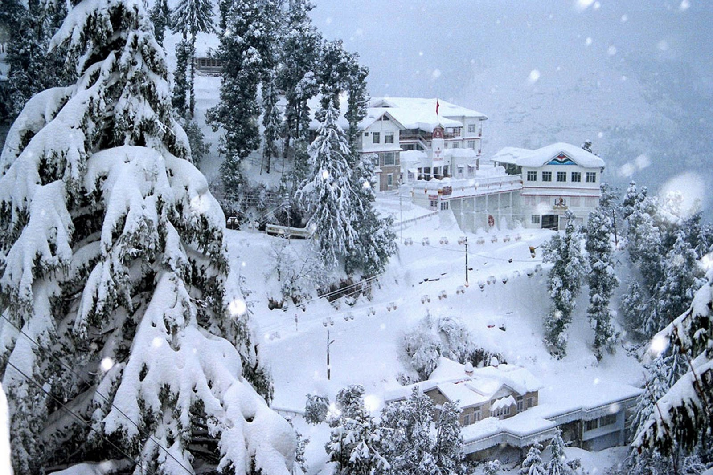
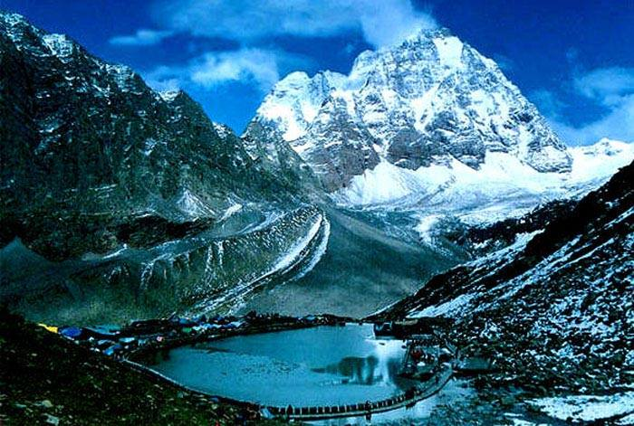
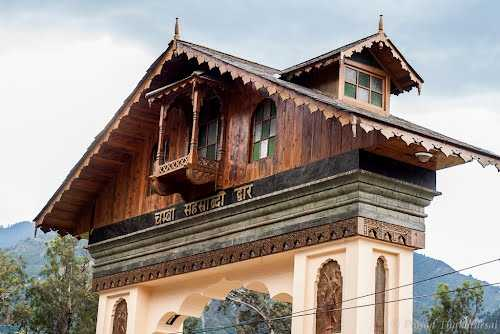
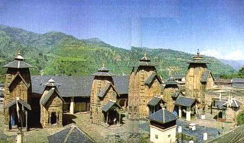
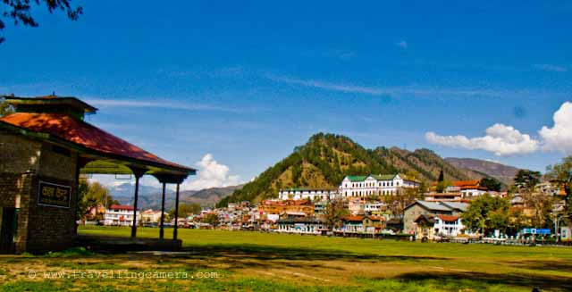

CHAMBA:
The valley of milk and honey is known for its streams, meadows, temples, paintings, rumal ( handkerchief ) and lakes. Chamba has few rivals for its scenic beauty. Chamba is situated at an altitude of 926 metres. and spreads in the area of 24 km. There are three well defined ranges in the district - The Dhauladhar range, the Pangi or Pir Panjal range and Zanskar range. Located on the banks of the Ravi river the township resembles an Italian village fortress. Chamba's temples are mostly dedicated to Lord Shiva and Vishnu and are built of richy engraved stone. The town is also the base for Gaddi shepherds who, though nomadic in their way of life, return to Chamba periodically to stock supplies. Chamba is so sheltered by snow-clad mountain barriers that its monuments escaped destruction at the hands of invaders, which is why it still remains one of the best preserved heartlands of the Himalayan arts.

Famous Places Around Chamba :
1. Kailash Manimahesh: ( 4,170 metres ) Mani-Mahesh is 28 kms. from Bharmour. During mela days efficient bus service is available upto Hadsar. This lake is supposed to be blessed by goddess Kali and protected by Lord Shiva. Thousands of pilgrims journey here to bathe in its sacred water, on the fifteenth day, following the festival of Janamashtami. A fair is held every year at this lake during the month of August or September. This is the must seen place in Chamba.

2.Bhuri Singh Museum : Bhuri Singh Museumis one of the oldest museums in India. It was set up in September 1908 by the Raja Bhuri Singh under the guidance and inspiration of venerable historian of Indian Art Professor John Philip Vogel. It is on the world art map because of its finest collection of Pahari miniature paiting chieflu Chamba and guler Kangra styles. Apart from the paintings, the museum houses a large collection of epigraphs, copper plates, historical documents, manuscripts, sculptures in stone, metal and wood, Chamba rumals, coins, murals, wood carvings, armour and other decorative arts. Opens daily from 10:00 A.M. to 5:00 P.M. except on Monday and gazetted/local holidays. Lunch time is 1:30 P.M. to 2:00 P.M. It is also open on Sunday.

3.Temples :Chamba has numerous ancient temples patterned in the style of local hill architecture, as well as Shikhara temples. The main groups of of these temples, Lakshminarayan, as well as most in the region are dedicated to Lord Shiva and Vishnu, built in the period between the 8th and 10th centuries A.D. The 'Chaturmukhi' image is a major highlight at the Hari Rai Temple. Some other important temples of Chamba are the Bansi Gopal temple, Shri Bajreshwari temple and Chamunda Devi temple. There is also a shrine dedicated to the memory of Rani Suhi who, as the legend, sacrificed herself, so water could to the town Chamba.

4.Chamab Chaugan : A public promenade - a grassy maidan less than 1 km. in length and about 75 metres wide. It is a busy local trading centre for villagers from the surrounding hills. Each year Chaugan is the site for the Minjar procession ( Minjar Mela ). The fair lasts for a week and people attend the fair in the Minjar procession. The fair lasts for a week and people attend the fair in the local customs and colorful dresses, in a gay mood walking in the Chaugan where a large number of sports and cultural activities take place to commemoratethis occasion. On the conclusion of fair the "Minjars" are immersed into the Ravi river. It is also an establishment base for various exciting treks into the valley around.

5.Chamba Town : Located on the banks of the Ravi river the township resembles an Italian village fortress. The weather of Chamba is always pleasant, not too cold and not too hot because of its typical height of 1006 meters from mean sea level. A gentle cool breeze is refreshing the whole town at intervals. There are many famous places around Chamba Town. Chamba is known for its streams, meadows, temples, paintings, rumal ( handkerchief ) and lakes.